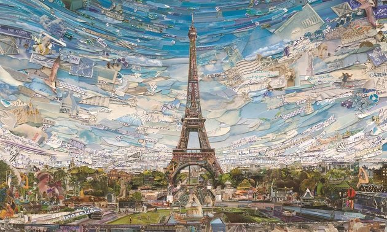
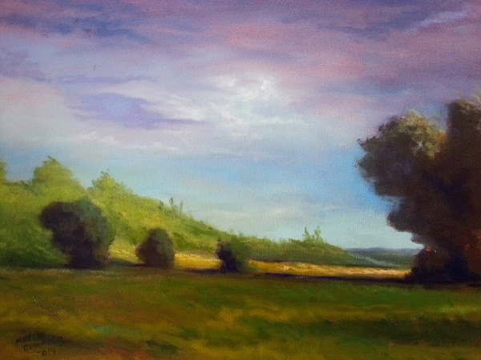
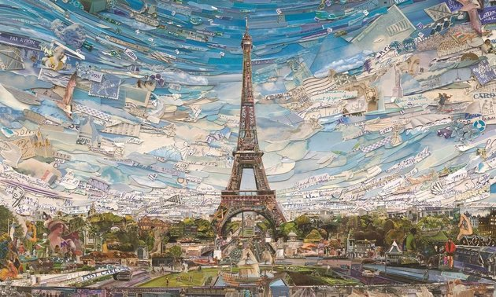
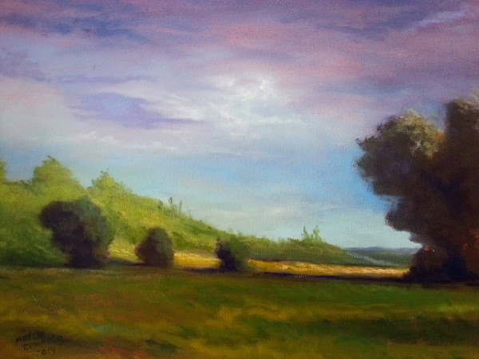

Vik Muniz
Vik Muniz (1961) é um artista plástico brasileiro, fotógrafo e pintor, é conhecido por usar materiais inusitados em suas obras, como lixo, açúcar e chocolate.Vik Muniz (Vicente José de Oliveira Muniz) nasceu em São Paulo, no dia 20 de dezembro de 1961. Formou-se em Publicidade na Fundação Armando Álvares Penteado – FAAP, em São Paulo. Em 1983, mudou-se para Nova Iorque.A partir de 1988, Vik Muniz começou a desenvolver trabalhos que faziam uso da percepção e representação de imagens usando diferentes técnicas, a partir de materiais como o açúcar, chocolate, catchup, gel para cabelo e lixo.Naquele mesmo ano, Vik Muniz criou desenhos de fotos que memorizou através da revista americana Life. Fotografou os desenhos e a partir de então, pintou as fotos para conferir um ar de realidade original. A série de desenhos foi denominada “The Best of Life”.Vik Muniz fez trabalhos inusitados, como a cópia da Mona Lisa de Leonardo da Vinci, usando manteiga de amendoim e geleia, como matéria prima.
Em 2005, Vik lançou um livro denominado “Reflex - A Vik Muniz Primer”, contendo uma coleção de fotos de seus trabalhos já expostos. Uma de suas exposições mais comentadas foi denominada “Vik Muniz: Reflex”, realizada no University of South Florida Contemporary Art Museum, também exposta no Seattle Art Museum Contemporary e no Art Museum em Nova York.O processo de trabalho de Vik Muniz consiste em compor imagens com os materiais, normalmente perecíveis, sobre uma superfície e fotografá-las, resultando no produto final de sua produção. As fotografias de Vik fazem parte de acervos particulares e também de museus de Londres, Los Angeles, São Paulo e Minas Gerais.Em 2010, foi produzido um documentário intitulado “Lixo Extraordinário” sobre o trabalho de Vik Muniz, com catadores de lixo de Duque de Caxias, cidade localizada na área metropolitana do Rio de Janeiro. A filmagem recebeu um prêmio no festival de Berlim na categoria Anistia Internacional e no Festival de Sundance.
 


